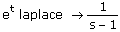
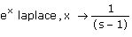
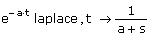
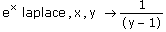
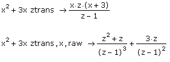
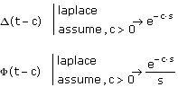
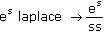

Symbolic Transforms |
To evaluate the transform or inverse transform of a function, type the expression for the function to be transformed and either:
- or -
Then press [Enter].
If the function contains more than one variable, type a comma and then type the independent variable for the function in the placeholder that appears to the right of the keyword.
Note: When you apply a transform keyword to a function, Mathcad expects the function to have the default independent variable shown in the table below, in the column under "Function." If your function has a different independent variable, you must type a comma, followed by the name of the variable.
Mathcad returns the transformed function whose default variable is listed in the column under "Transformed Function."
| Keywords for Transforms: |
| Keyword | Transform | Default Variables | |
| Function | Transformed Function | ||
| fourier | Fourier transform | t | ω |
| invfourier | Inverse Fourier transform | ω | t |
| laplace | Laplace transform | t | s |
| invlaplace | Inverse Laplace transform | s | t |
| ztrans | Z transform | n | z |
| invztrans | Inverse Z transform | z | n |
The following finds the Laplace transform of et:

Since the independent variable t is the default function variable for "laplace," you do not need to specify the variable name. Mathcad returns the transformed function with the default variable s, as shown in the column under "Transformed Function" in the table above.
However, if the function uses a different independent variable, such as x, then specify the variable after "laplace."

If the function has more than one variable, type the independent variable for the function to the right of "laplace":

You can also change the default variable for the transformed function, as in the following example:

Note that you cannot use the default variable for the transformed function as the independent variable for the original function. For example, the following returns an error:
e s laplace,s →
In this case, you must specify a variable for the transformed function that differs from the default variable, as shown in the preceding example.
To return results that are not fully simplified, use the modifier "raw" after the transform keyword. For example, compare the following results of "ztrans":



You can specify a different variable for the transformed function using the syntax shown in the last example above.